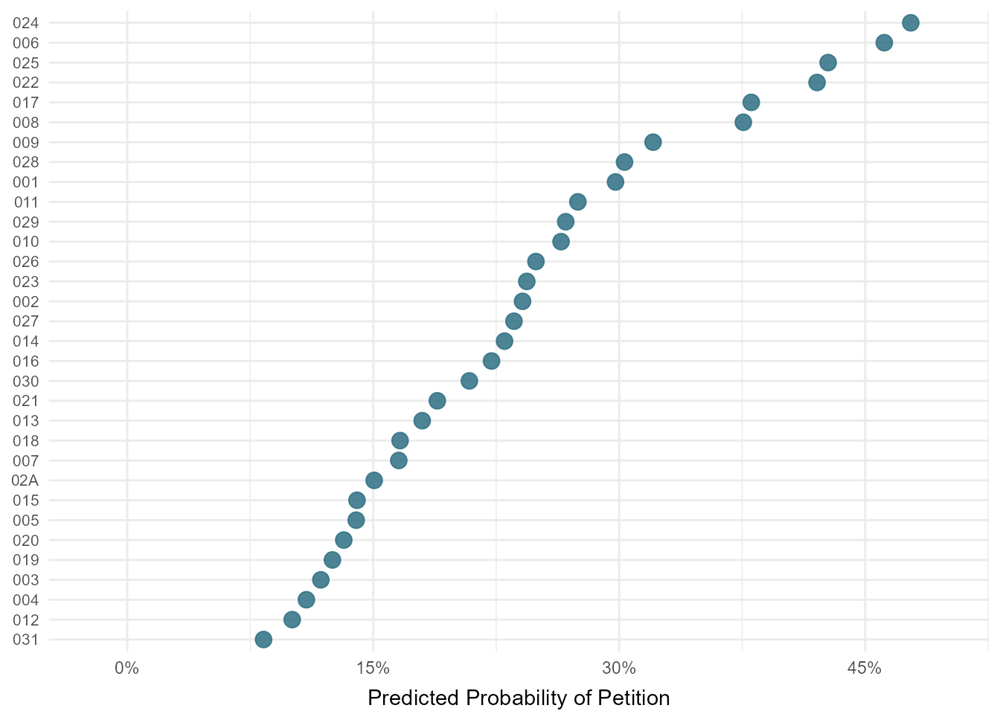
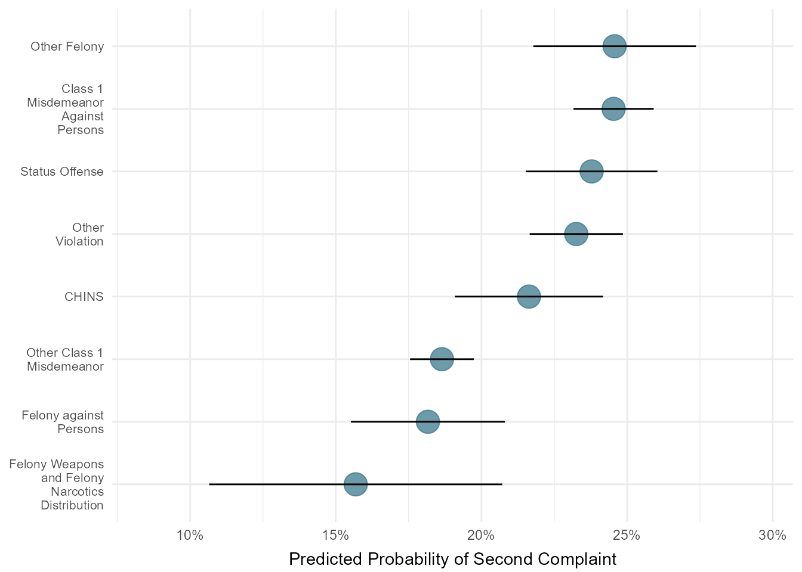
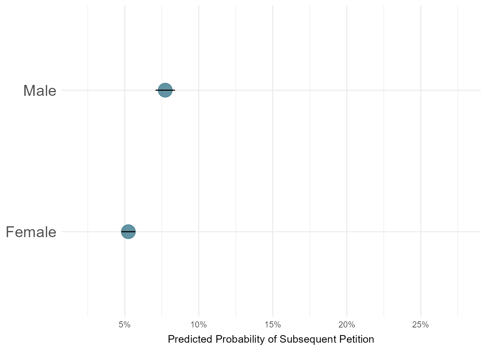
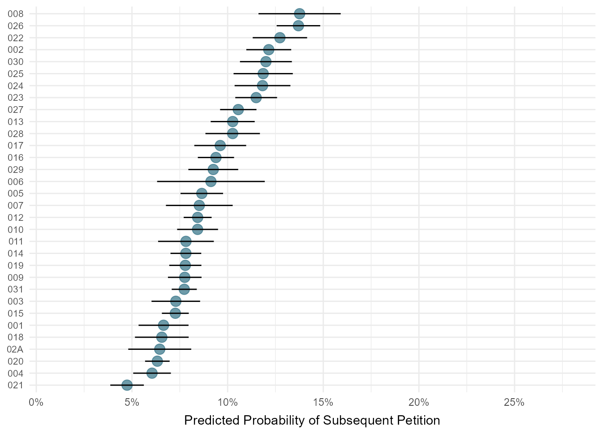
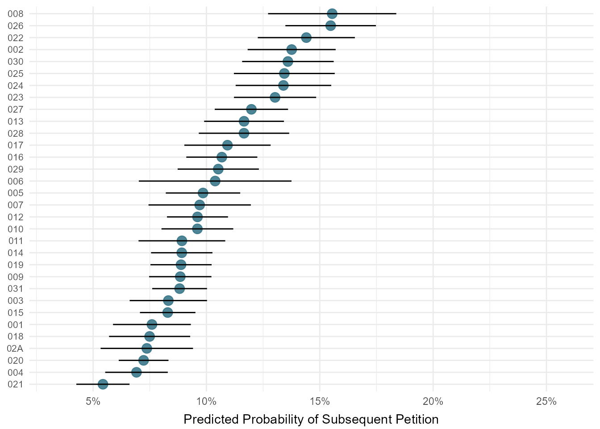

Analysis: Part I
Research Questions:
Using a cohort of first-time system involved youth, look at adjusted differences in likelihood of being diverted and likelihood of a re-complaint for diverted vs. non-diverted youth.
A. How does the likelihood of being diverted differ by race, sex, and geography?
B. For youth who are diverted, how likely are they to come back into the system with a new complaint or new petition within a year of the initial intake decision?
Methods:
For research question (A) we will build a series of logistic regression models, adjusting for race/ethnicity, age, offense, risk level, and other factors that may also be related to a decision to divert. Our outcome variable will be diversion/petition (0/1) and our independent variables of interest will be race, sex, and CSU. For research question (B) we will take a similar methodological approach, but restrict our cohort to diverted youth and focus on likelihood of a re-complaint within a year of diversion while adjusting for demographics, offense, risk level, etc. For research question (B) our outcome variable will be re-complaint within a year of the initial intake decision date (0/1) and our independent variables of interest will be race, sex, and CSU.
Cohort: first time system involved youth (no prior complaints), 2016-2021
Method: Logistic Regression, which allows us to look at the relationship between two variables (like race and decision to divert) while adjusting for other factors that may also be related to our outcome (like offense, risk, etc.).
Research Question A1: Petition
Table 1. Model Output: Petition
In the following analysis, the outcome variable is binary – split into petitioned at intake (excluding court summons) and either diverted, resolved, or referred to another agency. All records with other intake complaint decisions are excluded from this analysis.
NOTE: I am currently running the regression on youth with no prior JJ history.
Predictors included in model are:
race
gender
age at intake
CSU
referral/petitioner source
category of offense
year of petition
counts of felony, misdemeanor, status, and violation charges associated with intake/complaint
Another control we could add is something on how rural/urban each county is…
library(sjPlot)
library(sjmisc)
library(sjlabelled)
library(marginaleffects)
intake_complaints_no_prior_jj_to_model_diversion_petitioned <- df_analytic_complaints_disposition_caseload %>%
filter(jj_history_clean=="No Prior JJ History",
# flg_category%in%c("Deliquent","Status"),
!is.na(intake_decision_regression_model_petition)==TRUE) %>%
mutate(race = fct_relevel(race_clean, "White"),
gender = fct_relevel(gender_clean, "Male"),
referral_source_clean = fct_relevel(referral_source_clean, "Other"),
date_opened_year = fct_relevel(as.character(date_opened_year), "2015"),
intake_decision_regression_model_petition_num = ifelse(intake_decision_regression_model_petition=="Petitioned",
1,0)) %>%
distinct(juvenile_number,
.keep_all=TRUE)
va_diversion_petition_model <- glm(
intake_decision_regression_model_petition_num ~ race + gender + intake_age + csu + referral_source_clean + dai_clean +
date_opened_year + count_misd_with_case + count_felony_with_case + count_status_with_case + count_violation_with_case,
family = "binomial",
data = intake_complaints_no_prior_jj_to_model_diversion_petitioned)
tab_model(va_diversion_petition_model,
p.style = "numeric_stars")| intake decision regression model petition num |
|||
|---|---|---|---|
| Predictors | Odds Ratios | CI | p |
| (Intercept) | 1.53 *** | 1.22 – 1.93 | <0.001 |
| race [American Indian] | 1.12 | 0.68 – 1.83 | 0.666 |
| race [Asian] | 0.77 ** | 0.64 – 0.91 | 0.003 |
| race [Black] | 1.15 *** | 1.10 – 1.21 | <0.001 |
| race [Hispanic] | 1.12 ** | 1.04 – 1.20 | 0.002 |
| race [Other] | 0.92 * | 0.86 – 0.99 | 0.021 |
| gender [Female] | 0.92 *** | 0.88 – 0.95 | <0.001 |
| intake age | 1.02 *** | 1.01 – 1.03 | <0.001 |
| csu [002] | 0.79 *** | 0.69 – 0.91 | 0.001 |
| csu [003] | 0.29 *** | 0.23 – 0.36 | <0.001 |
| csu [004] | 0.23 *** | 0.20 – 0.27 | <0.001 |
| csu [005] | 0.58 *** | 0.49 – 0.69 | <0.001 |
| csu [006] | 3.05 *** | 2.57 – 3.63 | <0.001 |
| csu [007] | 1.42 *** | 1.22 – 1.66 | <0.001 |
| csu [008] | 2.79 *** | 2.38 – 3.28 | <0.001 |
| csu [009] | 1.40 *** | 1.22 – 1.61 | <0.001 |
| csu [010] | 1.08 | 0.92 – 1.27 | 0.340 |
| csu [011] | 0.79 * | 0.66 – 0.95 | 0.011 |
| csu [012] | 0.15 *** | 0.13 – 0.18 | <0.001 |
| csu [013] | 0.52 *** | 0.44 – 0.62 | <0.001 |
| csu [014] | 0.87 | 0.76 – 1.00 | 0.052 |
| csu [015] | 0.71 *** | 0.63 – 0.81 | <0.001 |
| csu [016] | 1.02 | 0.89 – 1.17 | 0.761 |
| csu [017] | 1.54 *** | 1.30 – 1.82 | <0.001 |
| csu [018] | 0.56 *** | 0.46 – 0.68 | <0.001 |
| csu [019] | 0.50 *** | 0.44 – 0.57 | <0.001 |
| csu [020] | 0.39 *** | 0.34 – 0.45 | <0.001 |
| csu [021] | 0.25 *** | 0.20 – 0.31 | <0.001 |
| csu [022] | 2.08 *** | 1.80 – 2.41 | <0.001 |
| csu [023] | 0.52 *** | 0.45 – 0.60 | <0.001 |
| csu [024] | 4.16 *** | 3.61 – 4.80 | <0.001 |
| csu [025] | 1.50 *** | 1.31 – 1.73 | <0.001 |
| csu [026] | 1.40 *** | 1.22 – 1.59 | <0.001 |
| csu [027] | 0.45 *** | 0.39 – 0.52 | <0.001 |
| csu [028] | 0.83 | 0.69 – 1.01 | 0.069 |
| csu [029] | 1.78 *** | 1.52 – 2.08 | <0.001 |
| csu [02A] | 1.17 | 0.94 – 1.46 | 0.168 |
| csu [030] | 0.65 *** | 0.55 – 0.77 | <0.001 |
| csu [031] | 0.25 *** | 0.22 – 0.28 | <0.001 |
| referral source clean [Citizen] |
1.17 * | 1.04 – 1.32 | 0.010 |
| referral source clean [Court] |
17.15 *** | 12.40 – 24.29 | <0.001 |
| referral source clean [Law Enforcement] |
0.63 *** | 0.57 – 0.70 | <0.001 |
| referral source clean [Probation Officer] |
0.99 | 0.77 – 1.26 | 0.918 |
| referral source clean [Relative/Spouse/Self] |
0.55 *** | 0.49 – 0.62 | <0.001 |
| referral source clean [School Official] |
1.32 *** | 1.16 – 1.49 | <0.001 |
| referral source clean [School Resource Officer] |
0.27 *** | 0.24 – 0.30 | <0.001 |
| dai clean [Class 1 Misdemeanor Against Persons] |
0.31 *** | 0.27 – 0.37 | <0.001 |
| dai clean [Felony against Persons] |
2.39 *** | 1.95 – 2.92 | <0.001 |
| dai clean [Felony Weapons and Felony Narcotics Distribution] |
2.81 *** | 2.09 – 3.80 | <0.001 |
| dai clean [Other Class 1 Misdemeanor] |
0.19 *** | 0.16 – 0.22 | <0.001 |
| dai clean [Other Felony] | 0.73 ** | 0.60 – 0.89 | 0.002 |
| dai clean [Other Violation] |
0.22 *** | 0.19 – 0.27 | <0.001 |
| dai clean [Status Offense] |
0.48 *** | 0.44 – 0.53 | <0.001 |
| date opened year [2016] | 0.85 *** | 0.79 – 0.92 | <0.001 |
| date opened year [2017] | 0.79 *** | 0.74 – 0.85 | <0.001 |
| date opened year [2018] | 0.70 *** | 0.65 – 0.75 | <0.001 |
| date opened year [2019] | 0.61 *** | 0.56 – 0.65 | <0.001 |
| date opened year [2020] | 0.53 *** | 0.49 – 0.58 | <0.001 |
| date opened year [2021] | 0.62 *** | 0.56 – 0.69 | <0.001 |
| count misd with case | 1.62 *** | 1.56 – 1.69 | <0.001 |
| count felony with case | 2.36 *** | 2.17 – 2.58 | <0.001 |
| count status with case | 1.11 | 0.97 – 1.25 | 0.119 |
| count violation with case | 2.16 *** | 2.00 – 2.33 | <0.001 |
| Observations | 67007 | ||
| R2 Tjur | 0.289 | ||
| * p<0.05 ** p<0.01 *** p<0.001 | |||
Table 2: Predicted Probablities by Race/Ethnicity
TO DO: Double check predicted probability interpretation with categorical variables in model
| race_eth | predicted_probability | std_error | rri |
|---|---|---|---|
| White | 0.0841316 | 0.0045102 | 1.0000000 |
| Black | 0.0955963 | 0.0051243 | 1.1362712 |
| Asian | 0.0657473 | 0.0064363 | 0.7814807 |
| Other | 0.0779614 | 0.0046656 | 0.9266600 |
| Hispanic | 0.0930470 | 0.0051838 | 1.1059697 |
| American Indian | 0.0929283 | 0.0217640 | 1.1045584 |
Figure 1: Predicted Probablities by Race/Ethnicity

Table 3: Predicted Probablities by Gender
TO DO: Double check predicted probability interpretation with categorical variables in model
| gender | predicted_probability | std_error | rri |
|---|---|---|---|
| Male | 0.0841316 | 0.0045102 | 1.083186 |
| Female | 0.0776706 | 0.0042574 | 1.000000 |
Figure 2: Predicted Probablities by Gender

Table 4: Predicted Probablities by CSU
TO DO: Double check predicted probability interpretation with categorical variables in model
| csu | predicted_probability | std_error |
|---|---|---|
| 006 | 0.5319643 | 0.0197831 |
| 016 | 0.2756684 | 0.0118666 |
| 010 | 0.2869805 | 0.0148182 |
| 015 | 0.2100149 | 0.0086617 |
| 002 | 0.2271689 | 0.0104960 |
| 024 | 0.6079048 | 0.0150200 |
| 022 | 0.4366843 | 0.0160546 |
| 031 | 0.0841316 | 0.0045102 |
| 027 | 0.1435699 | 0.0082082 |
| 007 | 0.3463402 | 0.0165520 |
| 023 | 0.1624363 | 0.0086152 |
| 014 | 0.2454318 | 0.0109260 |
| 013 | 0.1631260 | 0.0103217 |
| 001 | 0.2714400 | 0.0131686 |
| 025 | 0.3589942 | 0.0138775 |
| 029 | 0.3986661 | 0.0165336 |
| 011 | 0.2274988 | 0.0149380 |
| 030 | 0.1954343 | 0.0117648 |
| 009 | 0.3433642 | 0.0128707 |
| 012 | 0.0544757 | 0.0035328 |
| 026 | 0.3421621 | 0.0123931 |
| 02A | 0.3037019 | 0.0230988 |
| 019 | 0.1561794 | 0.0073028 |
| 021 | 0.0857756 | 0.0079785 |
| 003 | 0.0963630 | 0.0094288 |
| 004 | 0.0784392 | 0.0049131 |
| 018 | 0.1721609 | 0.0132689 |
| 028 | 0.2371319 | 0.0166828 |
| 008 | 0.5097023 | 0.0187048 |
| 005 | 0.1779189 | 0.0123677 |
| 020 | 0.1270814 | 0.0067984 |
| 017 | 0.3642934 | 0.0180696 |
Figure 3: Predicted Probablities by CSU

Table 5: Predicted Probablities by Charge Type
TO DO: Double check predicted probability interpretation with categorical variables in model
| dai_clean | predicted_probability | std_error |
|---|---|---|
| Felony against Persons | 0.5409889 | 0.0192073 |
| Other Class 1 Misdemeanor | 0.0841316 | 0.0045102 |
| Other Felony | 0.2659684 | 0.0146559 |
| Class 1 Misdemeanor Against Persons | 0.1333343 | 0.0068747 |
| Other Violation | 0.0989654 | 0.0063652 |
| Status Offense | 0.1917726 | 0.0125451 |
| CHINS | 0.3303491 | 0.0178545 |
| Felony Weapons and Felony Narcotics Distribution | 0.5813009 | 0.0332827 |
Figure 3: Predicted Probablities by Charge Type

Figure 4: Predicted Probabilities of Petition by CSU for Status Offenses
NOTE: This analysis excludes CHINS complaints. We may want to exclude CSU’s with small N sizes – I haven’t yet done that.

Research Question A2: Disposition
Table 6. Model Output: Disposition
In the following analysis, the outcome variable is binary – split into disposed or not disposed (whether complaint had any disposition data, regardless of disposition)
NOTE: I am currently running the regression on youth with no prior JJ history.
Predictors included in model are:
race
gender
age at intake
CSU
referral/petitioner source
category of offense
year of petition
counts of felony, misdemeanor, status, and violation charges associated with intake/complaint
Another control we could add is something on how rural/urban each county is…
intake_complaints_no_prior_jj_to_model_disposition <- df_analytic_complaints_disposition_caseload %>%
filter(jj_history_clean=="No Prior JJ History",
!is.na(intake_decision_regression_model_petition)==TRUE) %>%
mutate(race = fct_relevel(race_clean, "White"),
gender = fct_relevel(gender_clean, "Male"),
referral_source_clean = fct_relevel(referral_source_clean, "Other"),
date_opened_year = fct_relevel(as.character(date_opened_year), "2015"),
regression_model_dispo_num = ifelse(!is.na(dispo_description_clean)==TRUE,
1,0)) %>%
distinct(juvenile_number,
.keep_all=TRUE)
va_dispo_model <- glm(
regression_model_dispo_num ~ race + gender + intake_age + csu + referral_source_clean + dai_clean +
date_opened_year + count_misd_with_case + count_felony_with_case + count_status_with_case + count_violation_with_case,
family = "binomial",
data = intake_complaints_no_prior_jj_to_model_disposition)
tab_model(va_dispo_model,
p.style = "numeric_stars")| regression model dispo num |
|||
|---|---|---|---|
| Predictors | Odds Ratios | CI | p |
| (Intercept) | 0.11 *** | 0.08 – 0.14 | <0.001 |
| race [American Indian] | 1.23 | 0.72 – 2.05 | 0.431 |
| race [Asian] | 1.09 | 0.90 – 1.31 | 0.379 |
| race [Black] | 1.09 *** | 1.04 – 1.15 | 0.001 |
| race [Hispanic] | 1.29 *** | 1.20 – 1.40 | <0.001 |
| race [Other] | 0.78 *** | 0.72 – 0.85 | <0.001 |
| gender [Female] | 0.81 *** | 0.78 – 0.85 | <0.001 |
| intake age | 1.05 *** | 1.04 – 1.06 | <0.001 |
| csu [002] | 0.75 *** | 0.65 – 0.87 | <0.001 |
| csu [003] | 0.32 *** | 0.24 – 0.41 | <0.001 |
| csu [004] | 0.29 *** | 0.24 – 0.34 | <0.001 |
| csu [005] | 0.38 *** | 0.31 – 0.47 | <0.001 |
| csu [006] | 2.02 *** | 1.70 – 2.41 | <0.001 |
| csu [007] | 0.47 *** | 0.39 – 0.56 | <0.001 |
| csu [008] | 1.42 *** | 1.20 – 1.68 | <0.001 |
| csu [009] | 1.11 | 0.96 – 1.29 | 0.153 |
| csu [010] | 0.85 | 0.71 – 1.01 | 0.060 |
| csu [011] | 0.89 | 0.74 – 1.08 | 0.256 |
| csu [012] | 0.26 *** | 0.23 – 0.31 | <0.001 |
| csu [013] | 0.52 *** | 0.43 – 0.62 | <0.001 |
| csu [014] | 0.70 *** | 0.61 – 0.82 | <0.001 |
| csu [015] | 0.38 *** | 0.33 – 0.44 | <0.001 |
| csu [016] | 0.67 *** | 0.58 – 0.78 | <0.001 |
| csu [017] | 1.45 *** | 1.22 – 1.73 | <0.001 |
| csu [018] | 0.47 *** | 0.38 – 0.59 | <0.001 |
| csu [019] | 0.34 *** | 0.29 – 0.39 | <0.001 |
| csu [020] | 0.36 *** | 0.31 – 0.42 | <0.001 |
| csu [021] | 0.55 *** | 0.44 – 0.68 | <0.001 |
| csu [022] | 1.71 *** | 1.47 – 1.99 | <0.001 |
| csu [023] | 0.76 *** | 0.65 – 0.89 | <0.001 |
| csu [024] | 2.16 *** | 1.87 – 2.49 | <0.001 |
| csu [025] | 1.76 *** | 1.52 – 2.04 | <0.001 |
| csu [026] | 0.78 *** | 0.68 – 0.90 | 0.001 |
| csu [027] | 0.73 *** | 0.62 – 0.85 | <0.001 |
| csu [028] | 1.03 | 0.83 – 1.26 | 0.803 |
| csu [029] | 0.86 | 0.72 – 1.02 | 0.092 |
| csu [02A] | 0.42 *** | 0.31 – 0.56 | <0.001 |
| csu [030] | 0.62 *** | 0.51 – 0.75 | <0.001 |
| csu [031] | 0.21 *** | 0.18 – 0.25 | <0.001 |
| referral source clean [Citizen] |
1.13 | 0.98 – 1.31 | 0.105 |
| referral source clean [Court] |
1.95 *** | 1.54 – 2.46 | <0.001 |
| referral source clean [Law Enforcement] |
1.30 *** | 1.15 – 1.48 | <0.001 |
| referral source clean [Probation Officer] |
1.27 | 0.95 – 1.68 | 0.104 |
| referral source clean [Relative/Spouse/Self] |
0.87 | 0.76 – 1.01 | 0.069 |
| referral source clean [School Official] |
1.62 *** | 1.40 – 1.89 | <0.001 |
| referral source clean [School Resource Officer] |
0.86 * | 0.75 – 0.99 | 0.031 |
| dai clean [Class 1 Misdemeanor Against Persons] |
0.86 | 0.73 – 1.03 | 0.099 |
| dai clean [Felony against Persons] |
6.07 *** | 5.02 – 7.33 | <0.001 |
| dai clean [Felony Weapons and Felony Narcotics Distribution] |
6.02 *** | 4.65 – 7.80 | <0.001 |
| dai clean [Other Class 1 Misdemeanor] |
0.65 *** | 0.55 – 0.78 | <0.001 |
| dai clean [Other Felony] | 3.11 *** | 2.58 – 3.75 | <0.001 |
| dai clean [Other Violation] |
0.41 *** | 0.34 – 0.50 | <0.001 |
| dai clean [Status Offense] |
0.81 *** | 0.73 – 0.91 | <0.001 |
| date opened year [2016] | 1.06 | 0.98 – 1.15 | 0.161 |
| date opened year [2017] | 1.11 * | 1.02 – 1.20 | 0.015 |
| date opened year [2018] | 1.01 | 0.93 – 1.09 | 0.872 |
| date opened year [2019] | 0.90 * | 0.83 – 0.98 | 0.012 |
| date opened year [2020] | 0.68 *** | 0.61 – 0.74 | <0.001 |
| date opened year [2021] | 0.81 *** | 0.72 – 0.91 | <0.001 |
| count misd with case | 1.40 *** | 1.35 – 1.46 | <0.001 |
| count felony with case | 1.52 *** | 1.45 – 1.61 | <0.001 |
| count status with case | 1.44 *** | 1.26 – 1.64 | <0.001 |
| count violation with case | 1.89 *** | 1.76 – 2.03 | <0.001 |
| Observations | 67007 | ||
| R2 Tjur | 0.213 | ||
| * p<0.05 ** p<0.01 *** p<0.001 | |||
Table 7: Predicted Probablities by CSU
TO DO: Double check predicted probability interpretation with categorical variables in model
| csu | predicted_probability | std_error |
|---|---|---|
| 006 | 0.4083031 | 0.0189867 |
| 016 | 0.1868709 | 0.0099319 |
| 010 | 0.2244750 | 0.0135259 |
| 015 | 0.1159268 | 0.0061168 |
| 002 | 0.2035645 | 0.0103248 |
| 024 | 0.4240583 | 0.0146618 |
| 022 | 0.3687958 | 0.0154071 |
| 031 | 0.0680112 | 0.0040750 |
| 027 | 0.1989447 | 0.0108967 |
| 007 | 0.1377052 | 0.0102991 |
| 023 | 0.2058659 | 0.0109154 |
| 014 | 0.1938692 | 0.0098699 |
| 013 | 0.1500276 | 0.0103426 |
| 001 | 0.2544035 | 0.0133223 |
| 025 | 0.3752536 | 0.0144826 |
| 029 | 0.2270369 | 0.0134773 |
| 011 | 0.2336780 | 0.0160446 |
| 030 | 0.1750152 | 0.0125380 |
| 009 | 0.2752960 | 0.0119060 |
| 012 | 0.0825691 | 0.0050963 |
| 026 | 0.2108190 | 0.0100016 |
| 02A | 0.1248494 | 0.0156211 |
| 019 | 0.1032081 | 0.0056286 |
| 021 | 0.1580015 | 0.0138298 |
| 003 | 0.0972571 | 0.0108992 |
| 004 | 0.0898349 | 0.0063146 |
| 018 | 0.1383928 | 0.0125293 |
| 028 | 0.2593845 | 0.0184215 |
| 008 | 0.3262786 | 0.0167508 |
| 005 | 0.1155077 | 0.0099188 |
| 020 | 0.1090728 | 0.0063792 |
| 017 | 0.3308074 | 0.0174024 |
Figure 5: Predicted Probablities by CSU

Table 8: Predicted Probablities by Charge Type
TO DO: Double check predicted probability interpretation with categorical variables in model
| dai_clean | predicted_probability | std_error |
|---|---|---|
| Felony against Persons | 0.4035882 | 0.0173450 |
| Other Class 1 Misdemeanor | 0.0680112 | 0.0040750 |
| Other Felony | 0.2575488 | 0.0136848 |
| Class 1 Misdemeanor Against Persons | 0.0878735 | 0.0052827 |
| Other Violation | 0.0441635 | 0.0033070 |
| Status Offense | 0.0831390 | 0.0068257 |
| CHINS | 0.1002784 | 0.0080786 |
| Felony Weapons and Felony Narcotics Distribution | 0.4015517 | 0.0275558 |
Figure 6: Predicted Probablities by Charge Type

Figure 7: Predicted Probabilities of Petition by CSU for Status Offenses
NOTE: This analysis excludes CHINS complaints. We may want to exclude CSU’s with small N sizes – I haven’t yet done that.

Research Question B1: Subsequent Complaint
Table 9. Model Output: Subsequent Complaint within One Year
In the following analysis, the outcome variable is binary – whether a youth received another complaint within a year of their first intake (where the intake decision was diversion). All records with other intake complaint decisions are excluded from this analysis.
NOTE: I am currently running the regression on youth with no prior JJ history and who were initially diverted.
Predictors included in model are:
race
gender
age at intake
CSU
referral/petitioner source
category of offense
year of petition
counts of felony, misdemeanor, status, and violation charges associated with intake/complaint
Another control we could add is something on how rural/urban each county is…
intake_initial_diversion_re_complaint_within_a_year_model <- df_analytic_complaints_disposition_caseload %>%
filter(jj_history_clean=="No Prior JJ History",
intake_decision_clean=="Diverted",
!is.na(intake_decision_regression_model_petition)==TRUE) %>%
mutate(race = fct_relevel(race_clean, "White"),
gender = fct_relevel(gender_clean, "Male"),
referral_source_clean = fct_relevel(referral_source_clean, "Other"),
date_opened_year = fct_relevel(as.character(date_opened_year), "2015")) %>%
distinct(juvenile_number,
.keep_all=TRUE)
va_diversion_re_complaint_model <- glm(
regression_outcome_new_complaint_one_year_first_time_jj ~ race + gender + intake_age + csu + referral_source_clean + dai_clean +
date_opened_year + count_misd_with_case + count_felony_with_case + count_status_with_case + count_violation_with_case,
family = "binomial",
data = intake_initial_diversion_re_complaint_within_a_year_model)
tab_model(va_diversion_re_complaint_model,
p.style = "numeric_stars")| regression outcome new complaint one year first time jj |
|||
|---|---|---|---|
| Predictors | Odds Ratios | CI | p |
| (Intercept) | 0.23 *** | 0.13 – 0.39 | <0.001 |
| race [American Indian] | 1.85 | 0.76 – 4.05 | 0.143 |
| race [Asian] | 0.72 * | 0.52 – 0.97 | 0.038 |
| race [Black] | 1.22 *** | 1.13 – 1.32 | <0.001 |
| race [Hispanic] | 1.46 *** | 1.31 – 1.63 | <0.001 |
| race [Other] | 0.59 *** | 0.52 – 0.68 | <0.001 |
| gender [Female] | 0.70 *** | 0.65 – 0.75 | <0.001 |
| intake age | 0.97 *** | 0.95 – 0.98 | <0.001 |
| csu [002] | 1.33 | 0.95 – 1.88 | 0.107 |
| csu [003] | 1.22 | 0.82 – 1.84 | 0.327 |
| csu [004] | 1.14 | 0.78 – 1.67 | 0.508 |
| csu [005] | 0.98 | 0.68 – 1.43 | 0.923 |
| csu [006] | 0.74 | 0.37 – 1.40 | 0.377 |
| csu [007] | 0.97 | 0.60 – 1.55 | 0.885 |
| csu [008] | 1.36 | 0.88 – 2.09 | 0.165 |
| csu [009] | 0.91 | 0.64 – 1.30 | 0.595 |
| csu [010] | 0.84 | 0.58 – 1.23 | 0.373 |
| csu [011] | 0.93 | 0.60 – 1.46 | 0.761 |
| csu [012] | 1.52 * | 1.11 – 2.12 | 0.011 |
| csu [013] | 1.59 ** | 1.13 – 2.27 | 0.009 |
| csu [014] | 1.13 | 0.81 – 1.60 | 0.474 |
| csu [015] | 0.96 | 0.69 – 1.35 | 0.794 |
| csu [016] | 1.08 | 0.77 – 1.53 | 0.663 |
| csu [017] | 1.04 | 0.70 – 1.56 | 0.841 |
| csu [018] | 1.15 | 0.73 – 1.81 | 0.533 |
| csu [019] | 1.12 | 0.80 – 1.59 | 0.529 |
| csu [020] | 1.04 | 0.75 – 1.46 | 0.824 |
| csu [021] | 0.83 | 0.55 – 1.24 | 0.355 |
| csu [022] | 1.17 | 0.81 – 1.70 | 0.413 |
| csu [023] | 1.54 * | 1.10 – 2.17 | 0.013 |
| csu [024] | 1.12 | 0.77 – 1.65 | 0.561 |
| csu [025] | 1.31 | 0.90 – 1.93 | 0.168 |
| csu [026] | 1.42 * | 1.03 – 2.00 | 0.039 |
| csu [027] | 1.28 | 0.92 – 1.80 | 0.154 |
| csu [028] | 1.40 | 0.96 – 2.06 | 0.087 |
| csu [029] | 1.01 | 0.68 – 1.50 | 0.971 |
| csu [02A] | 0.94 | 0.57 – 1.55 | 0.816 |
| csu [030] | 1.30 | 0.90 – 1.88 | 0.165 |
| csu [031] | 1.38 * | 1.01 – 1.91 | 0.050 |
| referral source clean [Citizen] |
1.55 *** | 1.21 – 2.00 | 0.001 |
| referral source clean [Court] |
0.53 | 0.12 – 1.57 | 0.309 |
| referral source clean [Law Enforcement] |
1.36 ** | 1.12 – 1.67 | 0.003 |
| referral source clean [Probation Officer] |
1.49 | 0.95 – 2.30 | 0.077 |
| referral source clean [Relative/Spouse/Self] |
2.60 *** | 2.00 – 3.40 | <0.001 |
| referral source clean [School Official] |
1.24 | 0.97 – 1.60 | 0.089 |
| referral source clean [School Resource Officer] |
1.22 | 0.99 – 1.52 | 0.071 |
| dai clean [Class 1 Misdemeanor Against Persons] |
1.18 | 0.87 – 1.58 | 0.279 |
| dai clean [Felony against Persons] |
0.80 | 0.52 – 1.26 | 0.336 |
| dai clean [Felony Weapons and Felony Narcotics Distribution] |
0.67 | 0.29 – 1.44 | 0.331 |
| dai clean [Other Class 1 Misdemeanor] |
0.83 | 0.62 – 1.12 | 0.219 |
| dai clean [Other Felony] | 1.18 | 0.79 – 1.77 | 0.420 |
| dai clean [Other Violation] |
1.10 | 0.80 – 1.51 | 0.563 |
| dai clean [Status Offense] |
1.13 | 0.90 – 1.43 | 0.300 |
| date opened year [2016] | 1.02 | 0.90 – 1.16 | 0.772 |
| date opened year [2017] | 1.08 | 0.95 – 1.23 | 0.234 |
| date opened year [2018] | 0.96 | 0.85 – 1.10 | 0.574 |
| date opened year [2019] | 0.88 | 0.78 – 1.00 | 0.052 |
| date opened year [2020] | 0.58 *** | 0.50 – 0.67 | <0.001 |
| date opened year [2021] | 0.23 *** | 0.18 – 0.29 | <0.001 |
| count misd with case | 1.15 *** | 1.08 – 1.22 | <0.001 |
| count felony with case | 0.99 | 0.79 – 1.21 | 0.907 |
| count status with case | 1.59 *** | 1.31 – 1.93 | <0.001 |
| count violation with case | 1.03 | 0.91 – 1.14 | 0.633 |
| Observations | 27429 | ||
| R2 Tjur | 0.041 | ||
| * p<0.05 ** p<0.01 *** p<0.001 | |||
Table 10: Predicted Probablities by Race/Ethnicity
TO DO: Double check predicted probability interpretation with categorical variables in model
| race_eth | predicted_probability | std_error | rri |
|---|---|---|---|
| White | 0.1864460 | 0.0109481 | 1.0000000 |
| Black | 0.2182442 | 0.0127266 | 1.1705487 |
| Other | 0.1196496 | 0.0097374 | 0.6417385 |
| Hispanic | 0.2512516 | 0.0146011 | 1.3475837 |
| Asian | 0.1409607 | 0.0207287 | 0.7560404 |
| American Indian | 0.2976334 | 0.0887840 | 1.5963516 |
Figure 8: Predicted Probablities by Race/Ethnicity

Table 11: Predicted Probablities by Gender
TO DO: Double check predicted probability interpretation with categorical variables in model
| gender | predicted_probability | std_error | rri |
|---|---|---|---|
| Male | 0.1864460 | 0.0109481 | 1.350266 |
| Female | 0.1380809 | 0.0088622 | 1.000000 |
Figure 9: Predicted Probablities by Gender

Table 12: Predicted Probablities by CSU
TO DO: Double check predicted probability interpretation with categorical variables in model
| csu | predicted_probability | std_error |
|---|---|---|
| 016 | 0.1522413 | 0.0122913 |
| 002 | 0.1806981 | 0.0141306 |
| 022 | 0.1625285 | 0.0159323 |
| 031 | 0.1864460 | 0.0109481 |
| 027 | 0.1750674 | 0.0122679 |
| 015 | 0.1373388 | 0.0100689 |
| 023 | 0.2036593 | 0.0147602 |
| 026 | 0.1911701 | 0.0130318 |
| 014 | 0.1584483 | 0.0120397 |
| 012 | 0.2019084 | 0.0118368 |
| 009 | 0.1313579 | 0.0116606 |
| 011 | 0.1344144 | 0.0202347 |
| 018 | 0.1611438 | 0.0240862 |
| 004 | 0.1591366 | 0.0173702 |
| 013 | 0.2091119 | 0.0169195 |
| 010 | 0.1231912 | 0.0131978 |
| 019 | 0.1566860 | 0.0124943 |
| 005 | 0.1404543 | 0.0145739 |
| 008 | 0.1841550 | 0.0249715 |
| 020 | 0.1473611 | 0.0104045 |
| 007 | 0.1384646 | 0.0230731 |
| 025 | 0.1788739 | 0.0187401 |
| 003 | 0.1691529 | 0.0205849 |
| 024 | 0.1570438 | 0.0169127 |
| 021 | 0.1209668 | 0.0154259 |
| 028 | 0.1887582 | 0.0198124 |
| 029 | 0.1435718 | 0.0162822 |
| 030 | 0.1773678 | 0.0166229 |
| 001 | 0.1426694 | 0.0200278 |
| 017 | 0.1477171 | 0.0176118 |
| 02A | 0.1355557 | 0.0245967 |
| 006 | 0.1099551 | 0.0295194 |
Figure 10: Predicted Probablities by CSU

Table 13: Predicted Probablities by Charge Type
TO DO: Double check predicted probability interpretation with categorical variables in model
| dai_clean | predicted_probability | std_error |
|---|---|---|
| Other Class 1 Misdemeanor | 0.1864460 | 0.0109481 |
| Status Offense | 0.2378372 | 0.0225830 |
| Class 1 Misdemeanor Against Persons | 0.2453778 | 0.0137592 |
| Other Violation | 0.2325620 | 0.0160008 |
| Other Felony | 0.2457252 | 0.0279120 |
| CHINS | 0.2163220 | 0.0254488 |
| Felony against Persons | 0.1816333 | 0.0264333 |
| Felony Weapons and Felony Narcotics Distribution | 0.1568405 | 0.0503055 |
Figure 11: Predicted Probablities by Charge Type

Figure 12: Predicted Probabilities by CSU for Status Offenses
NOTE: This analysis excludes CHINS complaints. We may want to exclude CSU’s with small N sizes – I haven’t yet done that.

Research Question B2: Subsequent Petition
Table 14. Model Output: Petition within One Year
In the following analysis, the outcome variable is binary – whether a youth received a petitioned complaint within a year of their first intake (where the intake decision was diversion). All records with other intake complaint decisions are excluded from this analysis.
NOTE: I am currently running the regression on youth with no prior JJ history and who were initially diverted.
Predictors included in model are:
race
gender
age at intake
CSU
referral/petitioner source
category of offense
year of petition
counts of felony, misdemeanor, status, and violation charges associated with intake/complaint
Another control we could add is something on how rural/urban each county is…
intake_initial_diversion_new_petition_within_a_year_model <- df_analytic_complaints_disposition_caseload %>%
filter(jj_history_clean=="No Prior JJ History",
intake_decision_clean=="Diverted",
!is.na(intake_decision_regression_model_petition)==TRUE) %>%
mutate(race = fct_relevel(race_clean, "White"),
gender = fct_relevel(gender_clean, "Male"),
referral_source_clean = fct_relevel(referral_source_clean, "Other"),
date_opened_year = fct_relevel(as.character(date_opened_year), "2015")) %>%
distinct(juvenile_number,
.keep_all=TRUE)
va_diversion_new_petition_model <- glm(
regression_outcome_new_petition_one_year_first_time_jj ~ race + gender + intake_age + csu + referral_source_clean + dai_clean +
date_opened_year + count_misd_with_case + count_felony_with_case + count_status_with_case + count_violation_with_case,
family = "binomial",
data = intake_initial_diversion_new_petition_within_a_year_model)
tab_model(va_diversion_new_petition_model,
p.style = "numeric_stars")| regression outcome new petition one year first time jj |
|||
|---|---|---|---|
| Predictors | Odds Ratios | CI | p |
| (Intercept) | 0.07 *** | 0.03 – 0.13 | <0.001 |
| race [American Indian] | 3.15 ** | 1.29 – 6.99 | 0.007 |
| race [Asian] | 0.84 | 0.56 – 1.21 | 0.368 |
| race [Black] | 1.24 *** | 1.13 – 1.36 | <0.001 |
| race [Hispanic] | 1.48 *** | 1.30 – 1.68 | <0.001 |
| race [Other] | 0.48 *** | 0.40 – 0.57 | <0.001 |
| gender [Female] | 0.66 *** | 0.61 – 0.72 | <0.001 |
| intake age | 1.00 | 0.98 – 1.02 | 0.879 |
| csu [002] | 1.94 ** | 1.28 – 3.04 | 0.002 |
| csu [003] | 1.10 | 0.66 – 1.87 | 0.709 |
| csu [004] | 0.90 | 0.55 – 1.51 | 0.692 |
| csu [005] | 1.33 | 0.85 – 2.14 | 0.227 |
| csu [006] | 1.41 | 0.63 – 2.95 | 0.381 |
| csu [007] | 1.31 | 0.74 – 2.32 | 0.359 |
| csu [008] | 2.24 ** | 1.35 – 3.77 | 0.002 |
| csu [009] | 1.18 | 0.76 – 1.88 | 0.467 |
| csu [010] | 1.29 | 0.83 – 2.08 | 0.274 |
| csu [011] | 1.19 | 0.69 – 2.06 | 0.528 |
| csu [012] | 1.29 | 0.86 – 2.00 | 0.229 |
| csu [013] | 1.61 * | 1.05 – 2.54 | 0.036 |
| csu [014] | 1.19 | 0.78 – 1.87 | 0.430 |
| csu [015] | 1.10 | 0.73 – 1.72 | 0.662 |
| csu [016] | 1.45 | 0.96 – 2.28 | 0.089 |
| csu [017] | 1.49 | 0.93 – 2.45 | 0.103 |
| csu [018] | 0.99 | 0.55 – 1.76 | 0.961 |
| csu [019] | 1.19 | 0.78 – 1.87 | 0.447 |
| csu [020] | 0.95 | 0.62 – 1.49 | 0.809 |
| csu [021] | 0.70 | 0.41 – 1.20 | 0.186 |
| csu [022] | 2.05 ** | 1.32 – 3.27 | 0.002 |
| csu [023] | 1.82 ** | 1.21 – 2.85 | 0.006 |
| csu [024] | 1.88 ** | 1.20 – 3.03 | 0.007 |
| csu [025] | 1.89 ** | 1.19 – 3.08 | 0.009 |
| csu [026] | 2.23 *** | 1.49 – 3.46 | <0.001 |
| csu [027] | 1.66 * | 1.10 – 2.58 | 0.020 |
| csu [028] | 1.61 | 1.00 – 2.63 | 0.054 |
| csu [029] | 1.43 | 0.89 – 2.36 | 0.150 |
| csu [02A] | 0.97 | 0.49 – 1.84 | 0.922 |
| csu [030] | 1.91 ** | 1.23 – 3.06 | 0.005 |
| csu [031] | 1.18 | 0.79 – 1.81 | 0.441 |
| referral source clean [Citizen] |
1.91 *** | 1.41 – 2.59 | <0.001 |
| referral source clean [Court] |
1.38 | 0.32 – 4.27 | 0.613 |
| referral source clean [Law Enforcement] |
1.50 ** | 1.18 – 1.93 | 0.001 |
| referral source clean [Probation Officer] |
2.10 ** | 1.24 – 3.47 | 0.004 |
| referral source clean [Relative/Spouse/Self] |
3.03 *** | 2.22 – 4.17 | <0.001 |
| referral source clean [School Official] |
1.94 *** | 1.44 – 2.64 | <0.001 |
| referral source clean [School Resource Officer] |
1.39 * | 1.07 – 1.81 | 0.015 |
| dai clean [Class 1 Misdemeanor Against Persons] |
1.24 | 0.88 – 1.74 | 0.216 |
| dai clean [Felony against Persons] |
0.93 | 0.55 – 1.56 | 0.776 |
| dai clean [Felony Weapons and Felony Narcotics Distribution] |
0.96 | 0.36 – 2.24 | 0.928 |
| dai clean [Other Class 1 Misdemeanor] |
0.93 | 0.66 – 1.30 | 0.663 |
| dai clean [Other Felony] | 1.40 | 0.89 – 2.25 | 0.150 |
| dai clean [Other Violation] |
1.19 | 0.83 – 1.71 | 0.346 |
| dai clean [Status Offense] |
1.07 | 0.82 – 1.40 | 0.619 |
| date opened year [2016] | 0.95 | 0.82 – 1.10 | 0.475 |
| date opened year [2017] | 0.99 | 0.86 – 1.14 | 0.886 |
| date opened year [2018] | 0.75 *** | 0.65 – 0.87 | <0.001 |
| date opened year [2019] | 0.62 *** | 0.54 – 0.72 | <0.001 |
| date opened year [2020] | 0.39 *** | 0.33 – 0.48 | <0.001 |
| date opened year [2021] | 0.13 *** | 0.09 – 0.18 | <0.001 |
| count misd with case | 1.11 *** | 1.05 – 1.18 | 0.001 |
| count felony with case | 1.05 | 0.81 – 1.31 | 0.714 |
| count status with case | 1.61 *** | 1.28 – 2.01 | <0.001 |
| count violation with case | 1.06 | 0.94 – 1.19 | 0.284 |
| Observations | 27429 | ||
| R2 Tjur | 0.042 | ||
| * p<0.05 ** p<0.01 *** p<0.001 | |||
Table 15: Predicted Probablities by Race/Ethnicity
TO DO: Double check predicted probability interpretation with categorical variables in model
| race_eth | predicted_probability | std_error | rri |
|---|---|---|---|
| White | 0.0773363 | 0.0065510 | 1.0000000 |
| Black | 0.0942191 | 0.0080530 | 1.2183032 |
| Other | 0.0385907 | 0.0045219 | 0.4989982 |
| Hispanic | 0.1101932 | 0.0094943 | 1.4248573 |
| Asian | 0.0657361 | 0.0127870 | 0.8500036 |
| American Indian | 0.2090453 | 0.0715974 | 2.7030682 |
Figure 13: Predicted Probablities by Race/Ethnicity

Table 16: Predicted Probablities by Gender
TO DO: Double check predicted probability interpretation with categorical variables in model
| gender | predicted_probability | std_error | rri |
|---|---|---|---|
| Male | 0.0773363 | 0.0065510 | 1.475249 |
| Female | 0.0524225 | 0.0047185 | 1.000000 |
Figure 14: Predicted Probablities by Gender

Table 17: Predicted Probablities by CSU
TO DO: Double check predicted probability interpretation with categorical variables in model
| csu | predicted_probability | std_error |
|---|---|---|
| 016 | 0.0939017 | 0.0094631 |
| 002 | 0.1215067 | 0.0117317 |
| 022 | 0.1273342 | 0.0142197 |
| 031 | 0.0773363 | 0.0065510 |
| 027 | 0.1055685 | 0.0095046 |
| 015 | 0.0726694 | 0.0070259 |
| 023 | 0.1149268 | 0.0109223 |
| 026 | 0.1370183 | 0.0113769 |
| 014 | 0.0781741 | 0.0080347 |
| 012 | 0.0843430 | 0.0073001 |
| 009 | 0.0775945 | 0.0087790 |
| 011 | 0.0782268 | 0.0145595 |
| 018 | 0.0656082 | 0.0140292 |
| 004 | 0.0604952 | 0.0098377 |
| 013 | 0.1026619 | 0.0115056 |
| 010 | 0.0843018 | 0.0106852 |
| 019 | 0.0778905 | 0.0083979 |
| 005 | 0.0865061 | 0.0111170 |
| 008 | 0.1376270 | 0.0214805 |
| 020 | 0.0632716 | 0.0064160 |
| 007 | 0.0852029 | 0.0174450 |
| 025 | 0.1185955 | 0.0154829 |
| 003 | 0.0729286 | 0.0126962 |
| 024 | 0.1182439 | 0.0145838 |
| 021 | 0.0474440 | 0.0087695 |
| 028 | 0.1026405 | 0.0142386 |
| 029 | 0.0925048 | 0.0130243 |
| 030 | 0.1200178 | 0.0135634 |
| 001 | 0.0665133 | 0.0130512 |
| 017 | 0.0961370 | 0.0135560 |
| 02A | 0.0645191 | 0.0164591 |
| 006 | 0.0912817 | 0.0281389 |
Figure 15: Predicted Probablities by CSU

Table 18: Predicted Probablities by Charge Type
TO DO: Double check predicted probability interpretation with categorical variables in model
| dai_clean | predicted_probability | std_error |
|---|---|---|
| Other Class 1 Misdemeanor | 0.0773363 | 0.0065510 |
| Status Offense | 0.0881608 | 0.0120859 |
| Class 1 Misdemeanor Against Persons | 0.1006974 | 0.0085267 |
| Other Violation | 0.0970472 | 0.0095230 |
| Other Felony | 0.1126370 | 0.0177002 |
| CHINS | 0.0828898 | 0.0133764 |
| Felony against Persons | 0.0773435 | 0.0151838 |
| Felony Weapons and Felony Narcotics Distribution | 0.0797832 | 0.0315258 |
Figure 16: Predicted Probablities by Charge Type

Figure 17: Predicted Probabilities by CSU for Status Offenses
NOTE: This analysis excludes CHINS complaints. We may want to exclude CSU’s with small N sizes – I haven’t yet done that.
